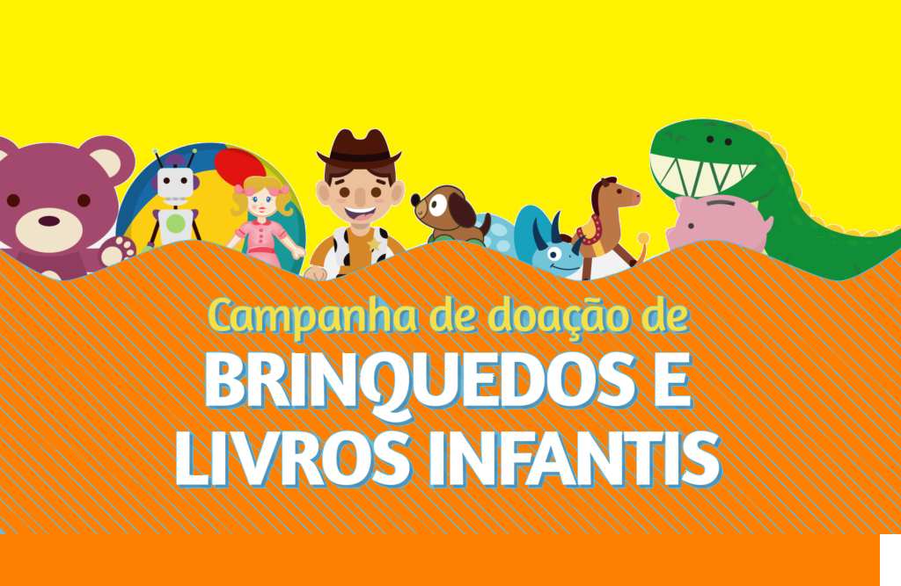
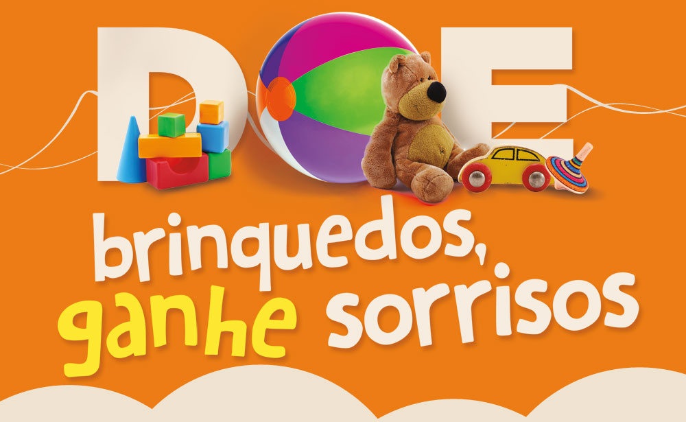

Faça o cadastro

Veja as novas campanhas

Bem-vindo(a) ao nosso site de doação de brinquedos! Somos um grupo de 5 estudantes universitários da PUC e criamos este site com o objetivo de ajudar a conectar instituições de caridade e pessoas necessitadas na região de Belo Horizonte.
Nosso objetivo é tornar o processo de doação de brinquedos mais fácil e acessível para todos. Sabemos que muitas pessoas têm brinquedos em casa que não estão sendo usados, enquanto outras gostariam de receber brinquedos para seus filhos, mas não têm recursos para comprá-los. Nós acreditamos que todos merecem ter acesso a brinquedos e que esses itens podem trazer muita alegria para as crianças.
Nosso site atua como um intermediário entre aqueles que têm brinquedos para doar e aqueles que precisam deles. Trabalhamos com instituições de caridade locais para garantir que os brinquedos sejam entregues a quem mais precisa, seja em abrigos, creches, orfanatos, hospitais e outras organizações sem fins lucrativos.
Acreditamos que a doação de brinquedos pode fazer uma grande diferença na vida das pessoas e estamos muito animados em fazer parte deste movimento de solidariedade. Nós convidamos você a se juntar a nós nesta missão e a contribuir para tornar o mundo um lugar melhor para as crianças.
Além da doação de brinquedos, também trabalhamos com doações de roupas e alimentos. Acreditamos que esses itens são essenciais para as pessoas que estão em situação de vulnerabilidade e, portanto, estamos comprometidos em ajudar a fornecer esses recursos para aqueles que precisam.
Assim como nos esforçamos para conectar doadores de brinquedos com instituições de caridade e pessoas necessitadas, também estamos empenhados em fazer o mesmo com roupas e alimentos. Trabalhamos em estreita colaboração com organizações locais sem fins lucrativos que trabalham na área de assistência social para garantir que esses recursos cheguem às pessoas que mais precisam.
Acreditamos que é nosso dever como membros da sociedade ajudar aqueles que estão em dificuldades e, ao trabalharmos com doações de roupas e alimentos, podemos ajudar a aliviar algumas das pressões que muitas famílias enfrentam. Por isso, convidamos você a se juntar a nós nesta jornada de solidariedade e contribuir para tornar a vida de muitas pessoas melhor.

Muitas vezes, quando pensamos em doar, podemos imaginar que nossas pequenas contribuições não farão diferença. No entanto, doar brinquedos, roupas ou alimentos pode fazer uma grande diferença na vida de muitas pessoas.
Ao doar, você pode ajudar a melhorar a qualidade de vida de pessoas que estão em situação de vulnerabilidade social, especialmente crianças e famílias em situação de pobreza. Sua doação pode trazer alegria e esperança para aqueles que estão passando por momentos difíceis. Além disso, doar pode ajudar a reduzir o desperdício e proteger o meio ambiente, já que muitas vezes as coisas que não usamos mais podem ser reutilizadas por outras pessoas.
A doação também pode ser uma forma de se envolver na comunidade e de contribuir para o bem comum. Ela pode ajudar a criar uma cultura de solidariedade e empatia, onde as pessoas se ajudam mutuamente e se preocupam com o bem-estar do próximo.
© 2023 Todos os direitos reservados. Este site foi desenvolvido por alunos da PUC para promover doações de brinquedos, roupas e alimentos para pessoas necessitadas na região de Belo Horizonte. Não nos responsabilizamos pelo conteúdo de sites externos vinculados a partir deste site.